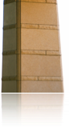

今年度の多変数関数論葉山シンポジウムを、下記の通り開催いたしますので、ご案内申し上げます。
Last updated: June 15, 2007
組織委員 :
平地 健吾 (東京大学)
吉川 謙一 (東京大学)
野口 潤次郎 (東京大学)
高山 茂晴 (東京大学)
2007年7月 15–18日
場所：
参加申し込み:６月末締切
湘南国際村センターでのお一人様当たりの会議特別パッケージ価格（1泊3食, 税サ込み）
シングル 13,000円, エコノミーツイン（相部屋) 11,500円
旅費が必要な方は平地までご連絡ください
多変数関数論
葉山シンポジウム
Friedrich Haslinger (Vienna)
John Bland (Toronto)
Dariusz Buraczewski (Wroclaw)
Francois Berteloot (Toulouse)
Ian Graham (Toronto)
Adam Harris (New England)
Wilhelm Kaup (Tuebingen)
Bent Orsted (Aarhus)
Thomas Peternell (Bayreuth)
Dan Popovici (Toulouse)
Khalid Koufany (Nancy)
Erwan Rousseau (Strasbourg)
Dror Varolin (Stony Brook)
Sung Ho Wang (Seoul)
Miroslav Englis (Prague)
伊師英之 (名古屋大)
植田一石（大阪大)
小木曽啓示（慶応大）
後藤竜司（大阪大）
宍倉光広（京都大）
山口佳三（北海道大)
※基本的に部屋タイプのご希望は先着順で承ります。
※参加料、１７日のパーティーの追加料金はありません。最終日の昼食をキャンセルしても返金はありません
※ キャンセル規定：シンポジウム開催2週間前より宿泊予約に関して下記の通りキャンセル料が発生します:
7月1日〜11日 1泊分; 7月12日以降 全額
お問い合わせ先：
* プログラム、旅費に関して：
平地健吾（東京大学大学院数理科学研究科)
(my last name)@ms.u-tokyo.ac.jp, Tel: 03-5465-7048, Fax: 03-5465-7011
* 参加登録、宿泊予約、変更、キャンセル受付：
(株)湘南国際村協会 多変数複素解析葉山シンポジウム登録デスク
松本・宍倉
このページに関する質問、訂正は 平地 まで。

XI
2007